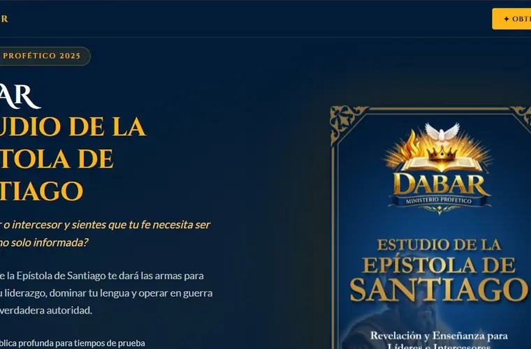
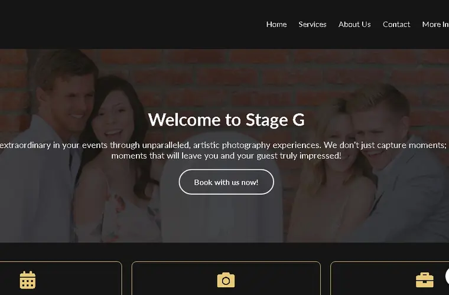
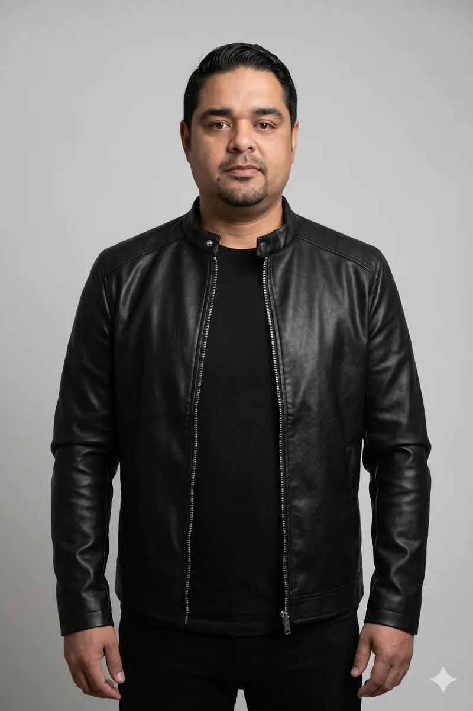

Desarrollo web
Construyo sitios y experiencias digitales rápidas, claras y adaptadas a la forma en que tu negocio realmente trabaja.
Ver másTrabajo entre tecnología, diseño y comunicación para convertir ideas, servicios y marcas en experiencias digitales claras, rápidas. ¿Quieres cambiar tu imagen? Haz clic en el botón y hablamos.
Dependiendo de tu proyecto, puedo ayudarte desde el desarrollo de la web hasta la forma en que presentas tu marca y conectas esa presencia con una estrategia digital.
Construyo sitios y experiencias digitales rápidas, claras y adaptadas a la forma en que tu negocio realmente trabaja.
Ver másCreo páginas enfocadas en una oferta y una acción concreta: captar contactos, presentar un servicio o vender.
Cómo puedo ayudarteTe ayudo a ordenar cómo te presentas, qué comunicas y cómo se percibe tu negocio en los puntos de contacto digitales.
Cómo puedo ayudarteConecto la web, el mensaje y la medición para que tus campañas y contenidos tengan una base más útil para crecer.
Cómo puedo ayudarteNo creo en hacer una web solo porque “hay que tener una web”. Antes de diseñar necesito saber qué quieres comunicar, a quién quieres llegar y qué debería pasar después de que alguien te encuentre.
Mi trabajo es unir criterio, diseño y tecnología para que cada pantalla, texto y botón tenga una razón.
Conoce más sobre mi forma de trabajarReviso tu idea, oferta, audiencia y objetivo antes de proponer una solución.
Defino qué necesita ver primero el visitante y cómo debe avanzar la conversación.
Diseño y desarrollo una experiencia ligera, adaptable y coherente con tu marca.
Dejo una base preparada para observar acciones y tomar mejores decisiones.
Prefiero mostrar pocos proyectos y explicar qué papel tuvo cada uno. Aquí tienes una selección de trabajos reales.

Estructura de venta para una colección editorial dirigida a la comunidad cristiana hispana, con checkout, medición y recorrido de conversión.
9 ventas confirmadas con una inversión inicial de 40 USD
Presentación profesional de servicios de photobooth con propuesta clara, galería visual y contacto directo para contrataciones.
Servicio presentado para el mercado de HoustonPresencia corporativa bilingüe para servicios de outsourcing, con arquitectura clara, confianza y formularios comerciales.
Propuesta dirigida a empresas de Norteamérica y Europa
He visto cambiar plataformas, tendencias y herramientas muchas veces. Lo que no cambia es la necesidad de comunicar con claridad, generar confianza y ofrecer una experiencia que haga fácil el siguiente paso.
Eso es lo que intento llevar a cada proyecto: menos ruido, más intención y una solución que puedas entender y mantener.
“Edevis convirtió nuestras ideas en una presencia digital clara, profesional y fácil de utilizar. La comunicación durante todo el proceso fue directa y responsable.”
“El trabajo visual ayudó a presentar nuestros servicios con una imagen mucho más profesional y coherente para nuestros clientes.”
“Recibimos una solución adaptada al proyecto y acompañamiento en cada etapa, desde la estructura inicial hasta la publicación.”
He concentrado el blog en tres temas que realmente ayudan a tomar decisiones sobre una web o landing page.
Guía completa para entender qué necesita una landing page que busca captar clientes: propuesta de valor, estructura, confianza, CTA, formularios, velocidad y medición.
Leer artículoComparativa completa entre landing page y sitio web para decidir qué estructura necesitas según tus objetivos, servicios, SEO, campañas y etapa del negocio.
Leer artículoGuía para entender cuánto puede costar una página web o landing page profesional, qué factores cambian el precio y cómo comparar propuestas sin elegir solo por el número final.
Leer artículoCuéntame qué quieres construir, mejorar o comunicar. Revisamos tu idea y te digo cuál puede ser el siguiente paso más útil.